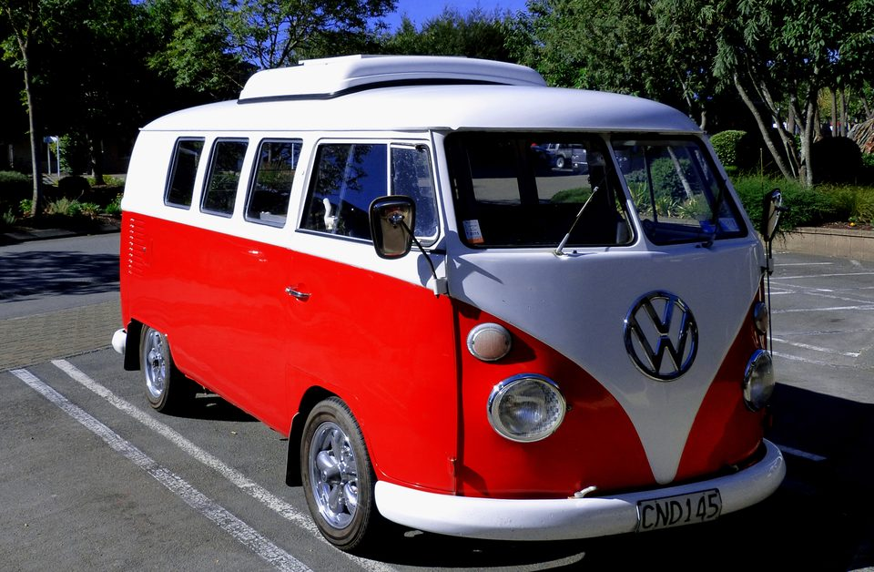
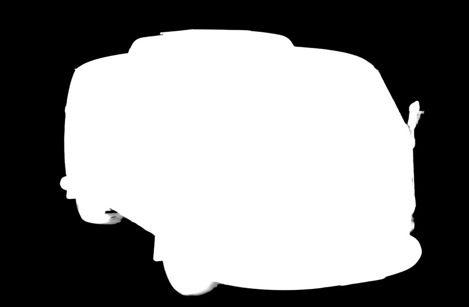
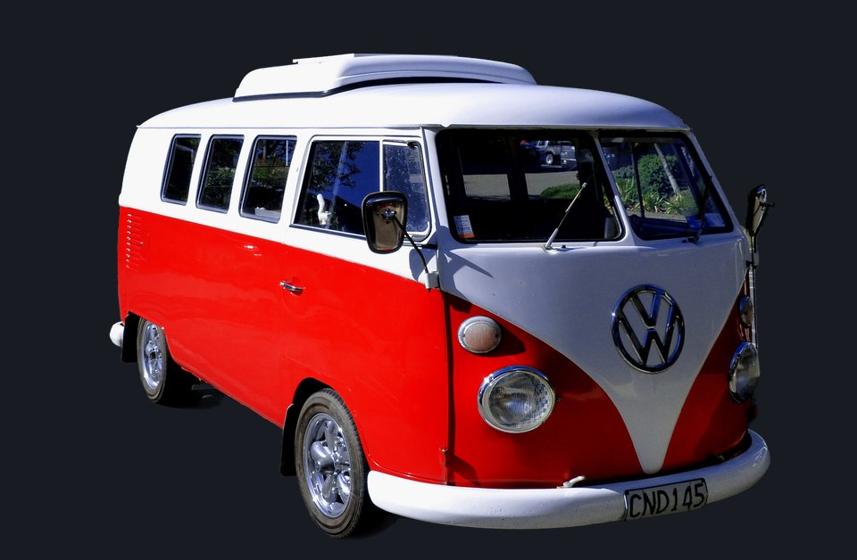
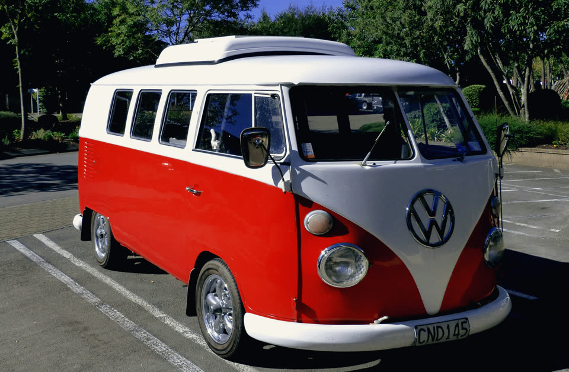
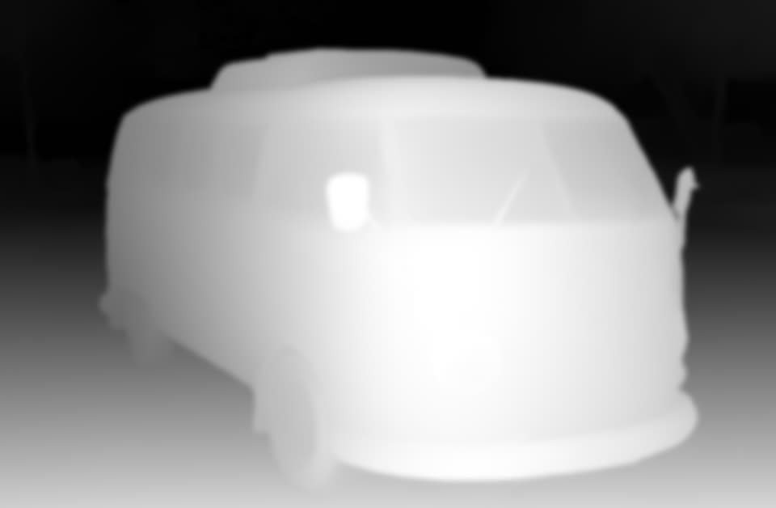
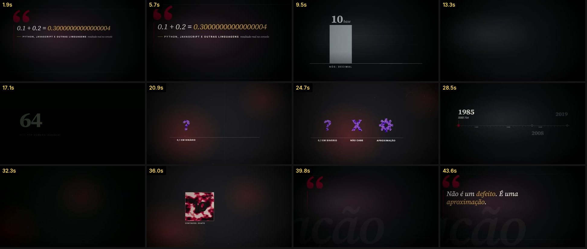

Visão geral
Um JSON entra.
Um vídeo sai.
Um harness em Python (com um projeto Remotion em Node) que transforma um storyboard em vídeo longo pronto para publicar. Cada etapa lê arquivos e grava arquivos, com cache por hash: só se refaz o que mudou.
h264_amf), o provedor ONNX (DirectML) e por que a IA local roda num venv separado. Nada nesta página é renderizado ao vivo: os vídeos são clipes já gerados.01 · Ponto de partida
Pesquisa e roteiro feitos pela IA
É uma skill (instruções reutilizáveis): a IA age como pesquisadora e roteirista do canal. Antes de qualquer coisa, ela lê a "bíblia" do canal (tom, regras de escrita, exemplos) e o schema. O fluxo tem uma parada para aprovação humana em cada etapa.
Pautas
5 propostas, checadas com busca na web para ver se há material confiável.
aprovaçãoDossiê
Pesquisa de verdade, com fonte primária quando possível. Todo fato tem link; "confirmado por 2+ fontes" fica separado de "disputado". Lista também a mídia livre que existe.
aprovaçãoEstrutura
Blocos, capítulos como pergunta, loops abertos e duração estimada.
aprovaçãoRoteiro
Narração completa no ritmo do canal (palavras por minuto). O que não está confirmado leva [VERIFICAR].
Storyboard
O roteiro aprovado é convertido palavra por palavra em JSON e importado: se não valida, volta para correção.
O que o dossiê vira no storyboard
A pesquisa não some: ela vira o bloco fontes do storyboard (o JSON do próximo passo). Cada afirmação fica ligada à fonte e às cenas que dependem dela, e alimenta a descrição do vídeo.
Regras que não podem falhar
- Nunca inventar fato, data, número, citação ou coordenada. Sem fonte, marca
[VERIFICAR], e o storyboard não importa com essa marca. - Nada de rosto de pessoa real gerado por IA; nada de jornal, carta ou documento falso.
- A IA propõe e pesquisa; o roteiro e os fatos são aprovados por uma pessoa antes de virar áudio.
02 · O contrato
Storyboard: o JSON que guia tudo
Três blocos: meta, cenas e fontes. Na maioria das vezes eu nem escrevo esse JSON: a IA gera a partir do roteiro aprovado e eu reviso. Por isso o formato precisa ser claro e validável. Ele é o contrato entre quem escreve (IA ou pessoa) e quem produz.
Sub-cortes, objetos e marcas apontam para uma palavra da narração (a âncora), não para um tempo. O tempo real só existe depois que a voz é alinhada.
Validação em duas camadas
- Schema (lib
jsonschema): campos, tipos e obrigatoriedade. Cada tipo de visual exige o seu sub-objeto. - Regras próprias em
validar.py: erros bloqueiam (ex.:[VERIFICARna narração, âncora que não existe no texto), avisos não. - Variedade: nenhum tipo de visual acima de 50% das cenas, no mínimo 4 tipos em episódios longos, no máximo 2 cenas seguidas iguais, gancho com pelo menos 6 mudanças visuais nos 30 s iniciais.
03 · Voz
De onde vem a narração, e como ela vira tempo
Mesma frase, três vozes
"Em 2001, sete em cada dez carros novos vendidos no Brasil tinham o mesmo tamanho de motor: mil cilindradas. Parece gosto do brasileiro. Mas quem escolheu foi uma tabela de imposto."
Gemini TTS (gemini-2.5-flash-preview-tts), com um prefixo de estilo ("tom de documentário, firme e natural").
Provedores testados
- ElevenLabs v4 (via OpenRouter)Referência de qualidade. Não devolve tempo por palavra, então o alinhamento é uma etapa separada.
- Chatterbox Multilingual pt-BR (local, GPU)Roda na GPU via WanGP e não cobra por caractere, mas foi reprovado para a voz do canal em português.
- Kokoro-82M (local, CPU)ONNX; bom para inglês, e só inglês. O DirectML falha numa camada do modelo, então roda na CPU.
- Gemini TTS (voz Algenib)Entrou quando o saldo da ElevenLabs acabou e depois de ouvir amostras. Cota diária por modelo, então o cache importa ainda mais.
Do áudio ao tempo de cada palavra
Transcrevo o áudio e comparo com o texto do roteiro, palavra por palavra, para descobrir em que segundo cada uma foi dita (números viram palavras antes: "1990" vira "mil novecentos e noventa"). A taxa de casamento é a porcentagem de palavras do roteiro encontradas no áudio: abaixo de 85%, a voz leu algo diferente do roteiro. Uma heurística de "stutter" encurta pausas dentro de palavra; o limiar padrão tratava pausa natural do Gemini como engasgo, então foi ajustado.
04 · Mídia e IA
Mídia com licença registrada, IA com trava
Bancos
- Licença é dado, não opinião. No Wikimedia só entram licenças livres: qualquer uma com NC, ND ou "fair use" é rejeitada. Cada download grava autor, licença e página em
creditos.json, e isso vira os créditos da descrição. - Pontuação dos candidatos: resolução, proporção, licença, duração do vídeo e uma penalidade por reaproveitar a mesma página em outra cena.
- O storyboard pode pedir um arquivo exato (
File:Nome.jpg); busca por texto livre é o último recurso.
IA generativa
- Provedores: Gemini (imagem e vídeo), fal.ai e local (Flux 2 Klein 4B para imagem; Wan 2.2 TI2V 5B para vídeo, via WanGP).
- Trava de custo: por padrão só simula. Gerar de verdade exige
--confirmar. - Ponte local: o
.venvdo repo chama por subprocess o Python do venv do WanGP, que carrega o modelo e imprime o resultado numa última linhaRESULTADO {json}. Nada de importar torch no ambiente principal. - Imagem de IA entra marcada como sintética nos créditos.
05 · Remotion
Como as cenas animadas são feitas
Remotion é um framework que gera vídeo a partir de componentes React. Em vez de editar numa linha do tempo, você escreve uma função que diz como a tela deve ficar em cada quadro. O exemplo abaixo é o menor possível: um título que aparece em fade durante o primeiro segundo.
O Remotion chama esse componente uma vez para cada quadro do vídeo, sempre com um número de quadro diferente, e transforma cada resultado numa imagem. Depois junta as imagens num MP4. O mesmo número de quadro sempre gera a mesma imagem, e isso torna o resultado previsível e fácil de guardar em cache. No projeto, isso fica assim:
Cada cena é um componente
Existe um componente para cada tipo de cena (Numero, Domino, Mapa…). Um pequeno roteador, o Cena.tsx, escolhe qual usar a partir do campo tipo do storyboard.
O Python entrega os dados por props
Antes de renderizar, o Python monta um JSON com tudo que a cena precisa: o texto, o segundo em que cada palavra é dita, as cores e o idioma. É assim que uma animação consegue "esperar" uma palavra da narração para começar.
Cada cena vira um MP4, com cache
O Node renderiza todos os quadros da cena e gera um MP4. O cache guarda um hash das props e do código em render/src: se você muda um componente, só as cenas que o usam são refeitas; as outras são reaproveitadas.
Os três trechos reais
À esquerda, o roteador que liga tipo a componente. À direita, a cena Numero: a contagem começa no quadro em que a palavra-âncora é dita e sobe com interpolate, a mesma função do exemplo mínimo. Embaixo, o lado Python: monta as props, calcula o hash e só chama o Node para o que mudou.
O que isso produz
Trechos reais do episódio de exemplo. O texto de cada legenda mostra o que o JSON pediu.
objetos: [{objeto, em: "motor"}]objetos: [{icone: "chave", em: "porta"}]comparacao: {modo: "numeros"}domino: {numero: 5}20%.Visão computacional: dois modelos pequenos, rodando local
Duas etapas do pipeline usam modelos de IA que olham para uma foto. Ambos rodam na própria máquina, sem API paga. Duas siglas aparecem nos nomes, então vale defini-las:
ONNX
Um formato aberto para guardar um modelo de IA já treinado num único arquivo. Ele roda com o onnxruntime, uma biblioteca leve, sem precisar do PyTorch. Por isso esses modelos funcionam direto no ambiente Python principal do projeto.
CPU e DirectML
É onde o modelo executa. CPU é o processador comum. DirectML é uma API do Windows que usa a placa de vídeo, de qualquer fabricante: aqui, uma GPU AMD, que não tem CUDA. Sem GPU compatível, o modelo cai para a CPU.
ISNet (ONNX, CPU): recorta o assunto de uma foto
O ISNet recebe uma foto e devolve uma máscara: uma imagem em preto e branco que marca o que é o assunto principal (branco) e o que é fundo (preto). Usando essa máscara como transparência, sobra só o assunto, sem fundo. O arquivo tem ~170 MB (licença Apache 2.0). Como roda uma vez por foto e o resultado fica em cache, a CPU basta.



No projeto, o recorte alimenta a colagem editorial (assunto em P&B sobre fundo de estúdio) e serve para limpar imagens de objetos gerados por IA antes de animá-los na narração.
Depth Anything V2 Small (ONNX, DirectML): estima a profundidade
Este modelo olha para uma única foto e estima, para cada pixel, a distância até a câmera. A saída é uma imagem em tons de cinza: quanto mais claro, mais perto. Roda na GPU via DirectML. O arquivo tem ~100 MB e usa só a versão Small, porque as versões maiores têm licença não comercial.
Exemplo: parallax 2.5D
Parallax é o efeito de objetos próximos se moverem mais que os distantes quando a câmera se desloca. Com o mapa de profundidade, dá para simular isso numa foto parada: cada pixel é deslocado proporcionalmente à sua profundidade. Fica em "2.5D" porque a imagem continua plana, mas parece ter camadas.


- O ponto de foco é o assunto: ele fica quase parado. O que está mais perto que ele se desloca para um lado, e o que está mais longe, para o outro.
- O deslocamento é pequeno (uma fração da largura da imagem) e vem junto de uma aproximação lenta da câmera. Ângulo e sentido variam de cena para cena.
- Só entra em fotos grandes e em cenas com pelo menos 3,5 s. No modo automático, cerca de 40% das fotos elegíveis, nunca duas seguidas.
Esse clipe foi gerado só para esta página, pelo mesmo caminho do pipeline, com uma foto do episódio de exemplo: o episódio em si não usa parallax.
Lição
Efeitos genéricos (anel, íris, zoom sem motivo) foram trocados por animação guiada pela história: o que aparece é o que a narração acabou de dizer.
06 · FFmpeg e áudio
Montagem, mixagem e master
Em vez de renderizar o vídeo inteiro de uma vez, o pipeline trabalha em pedaços e guarda cada pedaço em cache. Se você altera uma cena, só o pedaço dela é refeito. O áudio segue um caminho separado e é juntado no fim.
-c copy: emenda os arquivos sem comprimir de novoComo o vídeo é montado
- Por que blocos: cada bloco de até 12 cenas (cortado só onde há corte seco) é codificado em paralelo, porque a maioria dos filtros do FFmpeg usa um único núcleo, e cada bloco tem o seu próprio cache por hash.
- Emendar sem comprimir de novo: cada bloco já está salvo de forma comprimida (H.264). Comprimir outra vez, mesmo sem mexer na imagem, descarta um pouco mais de informação a cada vez, como salvar um JPG várias vezes. Com
-c copy, o FFmpeg não descomprime nem comprime: só copia os dados já comprimidos e emenda os arquivos. É rápido (segundos) e não perde qualidade. - Encoder: é o programa que comprime o vídeo. O pipeline testa de verdade cada opção codificando 1 quadro (listar o encoder no FFmpeg não garante que funciona) e escolhe entre NVENC (Nvidia), AMF (AMD) e QSV (Intel). Aqui:
h264_amf. Sem GPU, usa olibx264, na CPU.
Como o acabamento é feito
"Acabamento" é o conjunto de ajustes que faz fotos e clipes de fontes diferentes parecerem do mesmo filme. No FFmpeg, cada ajuste é um filtro; os filtros são encadeados (cada um recebe o vídeo, transforma e passa adiante) e rodam numa única passada. Há dois níveis:
- Por cena: cor por "era". Cada cena é classificada em histórico (arquivo e fotos antigas), moderno, ia (imagem gerada) ou gráfico (sem correção). Cada era tem uma receita de cor, guardada no arquivo de identidade visual do canal.
- Por bloco: vinheta, grão e fades. Depois de aplicar as transições entre as cenas do bloco, o bloco recebe a vinheta e, no render final, o grão. O primeiro bloco ganha um fade de entrada e o último, um de saída.
- Por último: o que é desenhado por cima. Rótulos, objetos animados e CTAs entram depois do acabamento, para ficarem nítidos e sem grão.
hue=s=0zera a saturação: a foto histórica vira preto e branco.eqajusta contraste e gama.colorbalanceempurra as sombras e as luzes para tons quentes ou frios.vignetteescurece as bordas, para o olho ir ao centro. O ângulo controla o tamanho da área clara: quanto menor, mais forte a vinheta.noiseespalha ruído fino.c0s=5é a intensidade ec0restringe o efeito ao canal de brilho (luma), então não aparecem pontos coloridos.t+ufaz o ruído mudar a cada quadro, como grão de filme. No rascunho o grão fica desligado, para renderizar mais rápido.
Transições e legendas
- Transições dinâmicas: whip (giro rápido com borrão), rack focus (o foco passa de um plano para outro), film burn (clarão de filme queimado) e zoom-through (atravessar a imagem com zoom). São calculadas quadro a quadro com OpenCV, sem assets de terceiros.
- Legenda (SRT): a narração é dividida em linhas de até ~42 caracteres e ~3 s. Um algoritmo escolhe onde quebrar para não terminar a linha numa palavra solta (como "de", "que" ou "e") e para nunca atravessar o fim de uma frase.
Ducking pelo envelope de palavras
Ducking é baixar a música enquanto a voz fala. O jeito comum é um sidechain: a voz controla um compressor na música, que reage com um pequeno atraso e pode "bombear" (o volume sobe e desce de forma audível). Aqui o ganho é desenhado de antemão: como o alinhamento já sabe o segundo de cada palavra, a música desce um pouco antes da primeira palavra e sobe depois da última, com rampas suaves.
Master em duas passadas
O loudnorm com linear=true cai sozinho no modo dinâmico quando o ganho faria o pico passar do teto. Para o nível final ser previsível, o pipeline mede primeiro e depois aplica um ganho linear com um limitador: alvo de −14 LUFS e true peak abaixo de −1,5 dBTP.
Saídas: MP4, SRT e descrição com capítulos e créditos (música e efeitos com licença CC BY entram sozinhos).
07 · Fechamento
O que dá para reaproveitar
Contrato antes do código
Um schema que valida o que o pipeline precisa e que a IA consegue preencher.
Tudo é arquivo + hash
Cache barato e a possibilidade de refazer só o que mudou, em qualquer etapa.
Portões explícitos
Custo, direitos e qualidade viram etapas do fluxo: --confirmar, licenças gravadas, taxa de casamento da voz, aprovação humana do roteiro.
Stack
Voz e alinhamento
- ElevenLabs v4 (OpenRouter)
- Gemini 2.5 Flash TTS
- Kokoro-82M · Chatterbox pt-BR
- Scribe v2 · faster-whisper
Visão
- ISNet (recorte)
- Depth Anything V2 Small
- YuNet (detecção de rosto)
- OpenCV · onnxruntime-directml
IA generativa
- Gemini (imagem e vídeo)
- Flux 2 Klein 4B · Wan 2.2 TI2V 5B
- fal.ai
Render
- Remotion 4 · React 19
- FFmpeg (AMF, loudnorm, xfade)
- Python 3.12 · jsonschema · Pillow · numpy
08 · Demonstração
Ao vivo: do prompt ao vídeo
A demonstração roda num repositório enxuto, feito só para isso, com o Claude Code no terminal. Você escreve um pedido em linguagem natural; o Claude gera o storyboard e o pipeline faz o resto, no que cabe num notebook sem placa de vídeo.
O pedido
O storyboard que serve de reserva
Resultado real
O rascunho que a própria pipeline gerou: 720p, 46 s, narração Gemini (voz Algenib), legendas em .srt e descrição gerados juntos.
Cada cena é um componente React renderizado pelo Remotion. A folha de contato abaixo mostra as 12 amostras do vídeo.

O que já entrou depois da primeira versão
- Formato "E se…": ficção explicativa (por exemplo, "e se o Sol parasse de brilhar por 24 horas?"), alternando com o documentário. Cada consequência vem classificada como documentada, modelada ou especulação.
- Mídia brasileira: uma lista verificada de acervos livres no Wikimedia Commons (Agência Brasil, Arquivo Nacional, Marc Ferrez, Augusto Malta…), com crédito e licença automáticos.